File: 000480.gt.txt (if the image is defective, simply delete all Arabic text and the line will be excluded)
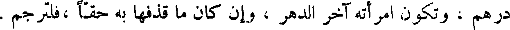
درهم ، وتكون امرأته آخر الدهر ، وان كان ما قذفها به حقا ، فلترجم .
File: 000481.gt.txt (if the image is defective, simply delete all Arabic text and the line will be excluded)
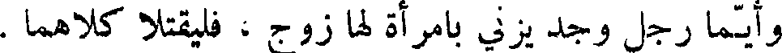
وأيما رجل وجد يزني بامرأة لها زوج ، فليقتلا كلاهما .
File: 000482.gt.txt (if the image is defective, simply delete all Arabic text and the line will be excluded)
وأيما رجل غلب امرأة على نفسها ، فليقتل الرجل ، وأي رجل وقع على
File: 000483.gt.txt (if the image is defective, simply delete all Arabic text and the line will be excluded)
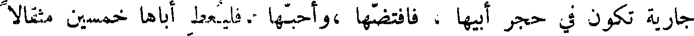
جارية تكون في حجر أبيها ، فافتضها ،وأحبها .فليعط إباها خمسين مثقالا
File: 000484.gt.txt (if the image is defective, simply delete all Arabic text and the line will be excluded)
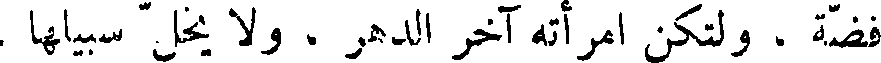
فضة ، ولتكن امرأته آخر الدهر ، و لا يخل سبيلها .
File: 000485.gt.txt (if the image is defective, simply delete all Arabic text and the line will be excluded)
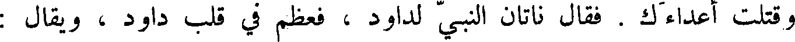
وقتلت أعداءك . فقال ناتان النبي لداود ، فعظم في قلب داود ، ويقال :
File: 000486.gt.txt (if the image is defective, simply delete all Arabic text and the line will be excluded)
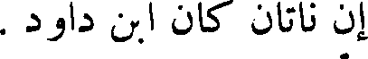
أن ناتان ان ابن داود .
File: 000487.gt.txt (if the image is defective, simply delete all Arabic text and the line will be excluded)
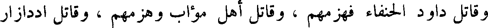
وقاتل داود الحنفاء فهزمهم ، وقاتل أهل مؤاب وهزمهم ، وقاتل اددازار
File: 000488.gt.txt (if the image is defective, simply delete all Arabic text and the line will be excluded)
ملك سوبا فهزمه ، واخذ له ألف مركب وسبعة آلاف من الخيل .
File: 000489.gt.txt (if the image is defective, simply delete all Arabic text and the line will be excluded)
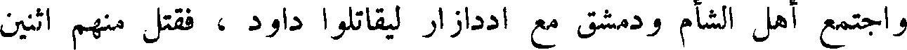
واجتمع أهل الشأم ودمشق مع اددازار ليقاتلوا داود ، فقتل منهم اثنين
File: 000490.gt.txt (if the image is defective, simply delete all Arabic text and the line will be excluded)
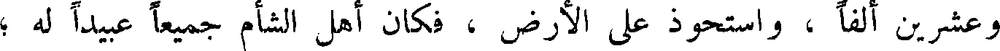
وعشرين ألفا ، واستحوذ على الأرض ، فكان أهل الشام جميعا عبيد له ؛
File: 000491.gt.txt (if the image is defective, simply delete all Arabic text and the line will be excluded)
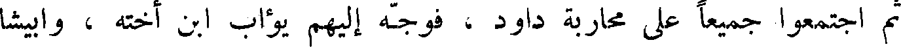
ثم اجتمعوا جميعا على محاربة داود ، فوجه إليهم يؤاب ابن أخته ، وايبشا
File: 000492.gt.txt (if the image is defective, simply delete all Arabic text and the line will be excluded)
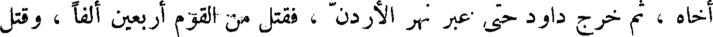
أخاه ، ثم خرج داود حتى عبر نهر الأردن ، فقتل من القوم أربعين ألفا ، وقتل
File: 000493.gt.txt (if the image is defective, simply delete all Arabic text and the line will be excluded)
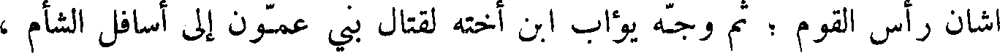
اشان رأس القوم ؛ ثم وجه يؤاب ابن أخته لقتال بني عمون إلى اسافل الشأم ،
File: 000494.gt.txt (if the image is defective, simply delete all Arabic text and the line will be excluded)
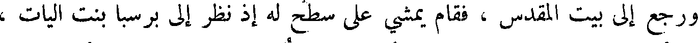
ورجع إلى بيت المقدس ، فقام يمشي على سطح له إذ نظر إلى برسبا بنت اليات ،
File: 000495.gt.txt (if the image is defective, simply delete all Arabic text and the line will be excluded)
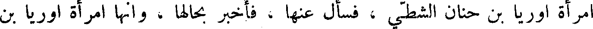
امرأة اوريا بن حنان الشطي ، فسأل عنها ، فأخبر بحالها ، وإنها امرأة اوريا بن
File: 000496.gt.txt (if the image is defective, simply delete all Arabic text and the line will be excluded)
وأرسل داود إلى امرأته ، فتزوجها وأحبلها ، فأرسل الله إليه الملكين ،
File: 000497.gt.txt (if the image is defective, simply delete all Arabic text and the line will be excluded)
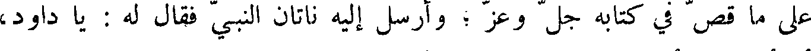
على ما قص في كتابه جل وعز ؛ وأرسل إليه ناتان النبي فقال له : يا داود،
File: 000498.gt.txt (if the image is defective, simply delete all Arabic text and the line will be excluded)
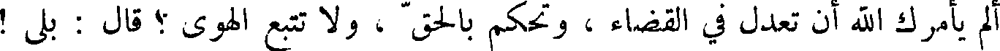
ألم يأمرك الله أن تعدل في القضاء ، وتحكم بالحق ، و لاتتبع الهوى ؟ قال : بلى !
File: 000499.gt.txt (if the image is defective, simply delete all Arabic text and the line will be excluded)
قال : فهذان رجلان يسكنان مدينة واحدة أحدهما غني والآخر فقير ، وكان
File: 000500.gt.txt (if the image is defective, simply delete all Arabic text and the line will be excluded)
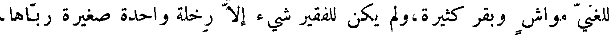
للغني مواش وبقر كثيرة،ولم يكن للفقير شيء إلا رخله واحدة صغيرة رباها،
File: 000501.gt.txt (if the image is defective, simply delete all Arabic text and the line will be excluded)
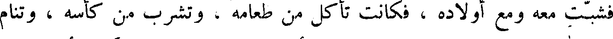
فشبت معه ومع أولاده ، فكانت تأكل من طعامه ، وتشرب من كأسه ، وتنام
File: 000502.gt.txt (if the image is defective, simply delete all Arabic text and the line will be excluded)
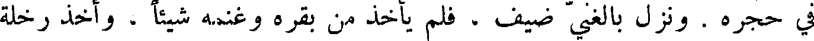
في حجره . ونزل بالغني ضيف ، فلم يأخذ من بقره وغنمه شيئا ، وأخذ رخله
File: 000503.gt.txt (if the image is defective, simply delete all Arabic text and the line will be excluded)
الفقير ، فهيأها لضيفه ، فغضب داود ، وقال : أهل أن يموت ، ويغرم بتلك
File: 000504.gt.txt (if the image is defective, simply delete all Arabic text and the line will be excluded)
الرخلة سبعة أضعاف . فقال النبي لداود : أنت الرجل الذي فعلت هذا !
File: 000505.gt.txt (if the image is defective, simply delete all Arabic text and the line will be excluded)
أن الرب إلهك يقول لك : أنا الذي جعلتك ملكا على بني إسرائيل ، بعد إن كنت
File: 000506.gt.txt (if the image is defective, simply delete all Arabic text and the line will be excluded)
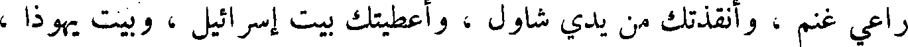
راعي غنم ، أنقذتك من يدي شاول ، أعطيتك بيت إسرائيل ، وبيت يهوذا ،
File: 000507.gt.txt (if the image is defective, simply delete all Arabic text and the line will be excluded)
لأبيك طعاما ! اذهب إلى الغنم ، فخذ جديين ، فاصنع طعاما ، وقربه لأبيك ،
File: 000508.gt.txt (if the image is defective, simply delete all Arabic text and the line will be excluded)
حتى تقع عليك البركة . فقال : أخاف أن يلعنني . فقالت : إن لعنك كانت
File: 000509.gt.txt (if the image is defective, simply delete all Arabic text and the line will be excluded)
لعنتك علي . فمضى يعقوب ، واخذ جديين ، فذبحهما ، وطبخهما ، وقربهما
To Save: `Ctrl+s`, make sure to choose `Webpage, complete`!